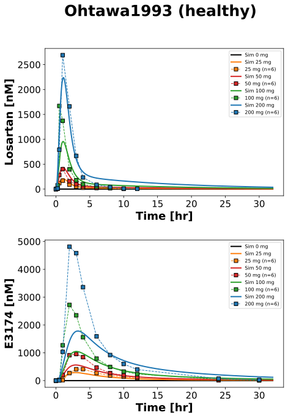
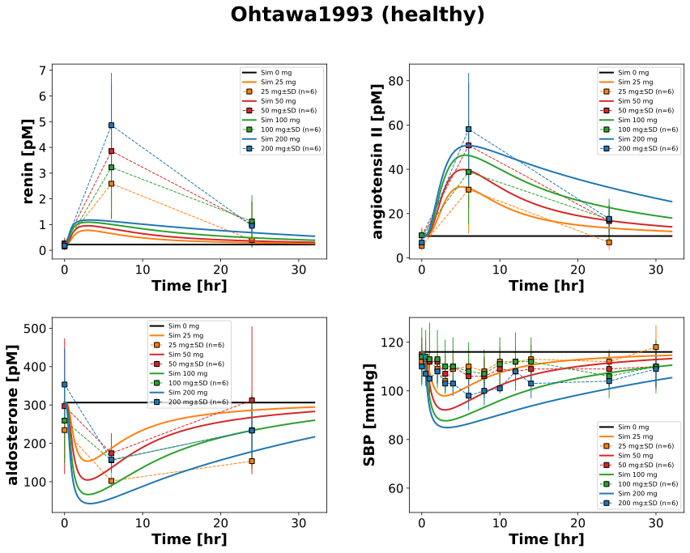

Ohtawa1993
Models
Datasets
- exp3174_100: Ohtawa1993_exp3174_100.tsv
- exp3174_200: Ohtawa1993_exp3174_200.tsv
- exp3174_25: Ohtawa1993_exp3174_25.tsv
- exp3174_50: Ohtawa1993_exp3174_50.tsv
- losartan_100: Ohtawa1993_losartan_100.tsv
- losartan_200: Ohtawa1993_losartan_200.tsv
- losartan_25: Ohtawa1993_losartan_25.tsv
- losartan_50: Ohtawa1993_losartan_50.tsv
- exp3174_100_multi: Ohtawa1993_exp3174_100_multi.tsv
- losartan_100_multi: Ohtawa1993_losartan_100_multi.tsv
- exp3174_recovery_100_multi: Ohtawa1993_exp3174_recovery_100_multi.tsv
- exp3174_urine_100_multi: Ohtawa1993_exp3174_urine_100_multi.tsv
- losartan_recovery_100_multi: Ohtawa1993_losartan_recovery_100_multi.tsv
- losartan_urine_100_multi: Ohtawa1993_losartan_urine_100_multi.tsv
- hr_100: Ohtawa1993_hr_100.tsv
- hr_200: Ohtawa1993_hr_200.tsv
- hr_25: Ohtawa1993_hr_25.tsv
- hr_50: Ohtawa1993_hr_50.tsv
- sbp_100: Ohtawa1993_sbp_100.tsv
- sbp_200: Ohtawa1993_sbp_200.tsv
- sbp_25: Ohtawa1993_sbp_25.tsv
- sbp_50: Ohtawa1993_sbp_50.tsv
- dbp_0_multi: Ohtawa1993_dbp_0_multi.tsv
- dbp_100_multi: Ohtawa1993_dbp_100_multi.tsv
- hr_0_multi: Ohtawa1993_hr_0_multi.tsv
- hr_100_multi: Ohtawa1993_hr_100_multi.tsv
- sbp_0_multi: Ohtawa1993_sbp_0_multi.tsv
- sbp_100_multi: Ohtawa1993_sbp_100_multi.tsv
- aldosterone_100: Ohtawa1993_aldosterone_100.tsv
- aldosterone_200: Ohtawa1993_aldosterone_200.tsv
- aldosterone_25: Ohtawa1993_aldosterone_25.tsv
- aldosterone_50: Ohtawa1993_aldosterone_50.tsv
- ang2_100: Ohtawa1993_ang2_100.tsv
- ang2_200: Ohtawa1993_ang2_200.tsv
- ang2_25: Ohtawa1993_ang2_25.tsv
- ang2_50: Ohtawa1993_ang2_50.tsv
- pra_100: Ohtawa1993_pra_100.tsv
- pra_200: Ohtawa1993_pra_200.tsv
- pra_25: Ohtawa1993_pra_25.tsv
- pra_50: Ohtawa1993_pra_50.tsv
- renin_100: Ohtawa1993_renin_100.tsv
- renin_200: Ohtawa1993_renin_200.tsv
- renin_25: Ohtawa1993_renin_25.tsv
- renin_50: Ohtawa1993_renin_50.tsv
- aldosterone_0_multi: Ohtawa1993_aldosterone_0_multi.tsv
- aldosterone_100_multi: Ohtawa1993_aldosterone_100_multi.tsv
- ang2_0_multi: Ohtawa1993_ang2_0_multi.tsv
- ang2_100_multi: Ohtawa1993_ang2_100_multi.tsv
- pra_0_multi: Ohtawa1993_pra_0_multi.tsv
- pra_100_multi: Ohtawa1993_pra_100_multi.tsv
- renin_0_multi: Ohtawa1993_renin_0_multi.tsv
- renin_100_multi: Ohtawa1993_renin_100_multi.tsv
Figures
- Fig1: Ohtawa1993_Fig1.svg
- Fig3_Tab3: Ohtawa1993_Fig3_Tab3.svg
- Fig2_Tab2A: Ohtawa1993_Fig2_Tab2A.svg
- Fig4_Tab4: Ohtawa1993_Fig4_Tab4.svg
{kind=link}
{kind=link}
{kind=link}
Fig1
|  |
Fig3_Tab3
|  |
Fig2_Tab2A

|
Fig4_Tab4
Code
../../../../experiments/studies/ohtawa1993.py
from typing import Dict
from sbmlsim.data import DataSet, load_pkdb_dataframe
from sbmlsim.fit import FitMapping, FitData
from sbmlutils.console import console
from pkdb_models.models.losartan.experiments.base_experiment import (
LosartanSimulationExperiment,
)
from pkdb_models.models.losartan.experiments.metadata import (
Tissue, Route, Dosing, ApplicationForm, Health,
Fasting, LosartanMappingMetaData, Coadministration, Genotype,
)
from sbmlsim.plot import Axis, Figure
from sbmlsim.simulation import Timecourse, TimecourseSim
from pkdb_models.models.losartan.helpers import run_experiments
class Ohtawa1993(LosartanSimulationExperiment):
"""Simulation experiment of Ohtawa1993."""
info = {
"[Cve_los]": "losartan",
"[Cve_e3174]": "exp3174",
"Aurine_los": "losartan_urine",
"Aurine_e3174": "exp3174_urine",
"[ren]": "renin",
"[ang2]": "ang2",
"[ald]": "aldosterone",
"SBP": "sbp",
"DBP": "dbp"
}
interventions_single = {
"placebo": 0, "LOS25": 25, "LOS50": 50, "LOS100": 100, "LOS200": 200
}
interventions_multi = {
"placebo": 0, "LOS100M": 100
}
colors = {0: "black", 25: "tab:orange", 50: "tab:red", 100: "tab:green", 200: "tab:blue"}
bodyweight = 64.3 # kg
def datasets(self) -> Dict[str, DataSet]:
dsets = {}
for fig_id in ["Fig1", "Fig2", "Tab2A", "Tab3", "Tab4", "Fig3", "Fig4"]:
df = load_pkdb_dataframe(f"{self.sid}_{fig_id}", data_path=self.data_path)
for label, df_label in df.groupby("label"):
dset = DataSet.from_df(df_label, self.ureg)
# unit conversion to mole/l
if label.startswith("losartan_"):
dset.unit_conversion("mean", 1 / self.Mr.los)
elif label.startswith("exp3174_"):
dset.unit_conversion("mean", 1 / self.Mr.e3174)
elif label.startswith("renin_"):
dset.unit_conversion("mean", 1 / self.Mr.ren)
elif label.startswith("ang2_"):
dset.unit_conversion("mean", 1 / self.Mr.ang2)
elif label.startswith("aldosterone_"):
dset.unit_conversion("mean", 1 / self.Mr.ald)
dsets[f"{label}"] = dset
# console.print(dsets)
# console.print(dsets.keys())
return dsets
def simulations(self) -> Dict[str, TimecourseSim]:
Q_ = self.Q_
tcsims = {}
ren_ref = Q_((11 + 9) / 2, "pg/ml") / self.Mr.ren
ang2_ref = Q_((11.2 + 9.4) / 2, "pg/ml") / self.Mr.ang2
ald_ref = Q_((121.7 + 99.1) / 2, "pg/ml") / self.Mr.ald
SBP_ref = Q_((115 + 117) / 2, "mmHg")
DBP_ref = Q_((70 + 71) / 2, "mmHg")
baseline_changes = {
"ren_ref": ren_ref,
"[ren]": ren_ref,
"ang2_ref": ang2_ref,
"[ang2]": ang2_ref,
"ald_ref": ald_ref,
"[ald]": ald_ref,
"SBP_ref": SBP_ref,
"DBP_ref": DBP_ref,
}
# single dose
for intervention, dose in self.interventions_single.items():
tcsims[f"po_{intervention}"] = TimecourseSim(
Timecourse(
start=0,
end=32 * 60, # [min]
steps=500,
changes={
**self.default_changes(),
"BW": Q_(self.bodyweight, "kg"),
"PODOSE_los": Q_(dose, "mg"),
**baseline_changes,
},
),
)
# multiple dose
for intervention, dose in self.interventions_multi.items():
tc0 = Timecourse(
start=0,
end=24 * 60, # [min]
steps=500,
changes={
**self.default_changes(),
"BW": Q_(self.bodyweight, "kg"),
"PODOSE_los": Q_(dose, "mg"),
**baseline_changes,
},
)
tc1 = Timecourse(
start=0,
end=24 * 60, # [min]
steps=500,
changes={
"PODOSE_los": Q_(dose, "mg"),
"Aurine_los": Q_(0, "mmole"),
"Aurine_e3174": Q_(0, "mmole"),
},
)
tc2 = Timecourse(
start=0,
end=60 * 60, # [min]
steps=500,
changes={
"PODOSE_los": Q_(dose, "mg"),
"Aurine_los": Q_(0, "mmole"),
"Aurine_e3174": Q_(0, "mmole"),
},
)
tcsims[f"po_{intervention}_multi"] = TimecourseSim(
[tc0] + [tc1 for _ in range(5)] + [tc2],
# time_offset=-6*24*60,
)
return tcsims
def fit_mappings(self) -> Dict[str, FitMapping]:
mappings = {}
# Single dose, pharmacokinetics/pharmacodynamics
for k, sid in enumerate(["[Cve_los]", "[Cve_e3174]", "[ren]", "[ang2]", "[ald]", "SBP"]):
name = self.info[sid]
for intervention, dose in self.interventions_single.items():
if intervention == "placebo":
continue
mappings[f"task_po_{name}_{intervention}"] = FitMapping(
self,
reference=FitData(
self,
dataset=f"{name}_{dose}",
xid="time",
yid="mean",
yid_sd=None,
count="count",
),
observable=FitData(
self, task=f"task_po_{intervention}", xid="time", yid=sid,
),
metadata=LosartanMappingMetaData(
tissue=Tissue.NONE if sid == "SBP" else Tissue.PLASMA,
route=Route.PO,
application_form=ApplicationForm.TABLET,
dosing=Dosing.SINGLE,
health=Health.HEALTHY,
fasting=Fasting.FASTED,
coadministration=Coadministration.NONE,
),
)
# Multiple dose, pharmacokinetics
for k, sid in enumerate(["[Cve_los]", "Aurine_los", "[Cve_e3174]", "Aurine_e3174"]):
name = self.info[sid]
for intervention, dose in self.interventions_multi.items():
if intervention == "placebo":
continue
mappings[f"task_po_{name}_{intervention}_multi"] = FitMapping(
self,
reference=FitData(
self,
dataset=f"{name}_{dose}_multi",
xid="time",
yid="mean",
yid_sd=None,
count="count",
),
observable=FitData(
self, task=f"task_po_{intervention}_multi", xid="time", yid=sid,
),
metadata=LosartanMappingMetaData(
tissue=Tissue.URINE if "urine" in sid else Tissue.PLASMA,
route=Route.PO,
application_form=ApplicationForm.TABLET,
dosing=Dosing.MULTIPLE,
health=Health.HEALTHY,
fasting=Fasting.FASTED,
coadministration=Coadministration.NONE,
),
)
# Multiple dose, pharmacodynamics
for k, sid in enumerate(["[ren]", "[ang2]", "[ald]", "SBP", "DBP"]):
name = self.info[sid]
for intervention, dose in self.interventions_multi.items():
mappings[
f"task_po_{name}_{intervention}_multi"] = FitMapping(
self,
reference=FitData(
self,
dataset=f"{name}_{dose}_multi",
xid="time",
yid="mean",
yid_sd=None,
count="count",
),
observable=FitData(
self, task=f"task_po_{intervention}_multi",
xid="time", yid=sid,
),
metadata=LosartanMappingMetaData(
tissue=Tissue.NONE if sid in ["SBP", "DBP"] else Tissue.PLASMA,
route=Route.PO,
application_form=ApplicationForm.TABLET,
dosing=Dosing.MULTIPLE,
health=Health.HEALTHY,
fasting=Fasting.FASTED,
coadministration=Coadministration.NONE,
),
)
# console.print(mappings)
return mappings
def figures(self) -> Dict[str, Figure]:
return {
**self.fig1(),
**self.fig3_tab3(),
**self.fig2_tab2a(),
**self.fig4_tab4(),
}
# Single dose, pharmacokinetics
def fig1(self) -> Dict[str, Figure]:
fig = Figure(
experiment=self,
sid="Fig1",
num_rows=2,
name=f"{self.__class__.__name__} (healthy)",
)
plots = fig.create_plots(
xaxis=Axis(self.label_time, unit=self.unit_time), legend=True
)
plots[0].set_yaxis(self.label_los, unit=self.unit_los)
plots[1].set_yaxis(self.label_e3174, unit=self.unit_e3174)
for k, sid in enumerate(["[Cve_los]", "[Cve_e3174]"]):
name = self.info[sid]
for intervention, dose in self.interventions_single.items():
# simulation
plots[k].add_data(
task=f"task_po_{intervention}",
xid="time",
yid=sid,
label=f"Sim {dose} mg",
color=self.colors[dose],
)
# data
if intervention == "placebo":
continue
plots[k].add_data(
dataset=f"{name}_{dose}",
xid="time",
yid="mean",
yid_sd=None,
count="count",
label=f"{dose} mg",
color=self.colors[dose],
)
return {
fig.sid: fig,
}
# Multiple dose, pharmacokinetics
def fig2_tab2a(self) -> Dict[str, Figure]:
fig = Figure(
experiment=self,
sid="Fig2_Tab2A",
num_rows=2,
num_cols=2,
name=f"{self.__class__.__name__} (healthy)",
)
plots = fig.create_plots(
xaxis=Axis(self.label_time, unit=self.unit_time), legend=True
)
plots[0].set_yaxis(self.label_los, unit=self.unit_los)
plots[1].set_yaxis(self.label_los_urine, unit=self.unit_los_urine)
plots[2].set_yaxis(self.label_e3174, unit=self.unit_e3174)
plots[3].set_yaxis(self.label_e3174_urine, unit=self.unit_e3174_urine)
for k, sid in enumerate(["[Cve_los]", "Aurine_los", "[Cve_e3174]", "Aurine_e3174"]):
name = self.info[sid]
for intervention, dose in self.interventions_multi.items():
# simulation
plots[k].add_data(
task=f"task_po_{intervention}_multi",
xid="time",
yid=sid,
label=f"Sim {dose} mg",
color=self.colors[dose],
)
# data
if intervention == "placebo":
continue
plots[k].add_data(
dataset=f"{name}_{dose}_multi",
xid="time",
yid="mean",
yid_sd=None,
count="count",
label=f"{dose} mg",
color=self.colors[dose],
)
return {
fig.sid: fig,
}
# Single dose, pharmacodynamics
def fig3_tab3(self) -> Dict[str, Figure]:
fig = Figure(
experiment=self,
sid="Fig3_Tab3",
num_rows=2,
num_cols=2,
name=f"{self.__class__.__name__} (healthy)",
)
plots = fig.create_plots(
xaxis=Axis(self.label_time, unit=self.unit_time), legend=True
)
plots[0].set_yaxis(self.labels["[ren]"], unit=self.units["[ren]"])
plots[1].set_yaxis(self.labels["[ang2]"], unit=self.units["[ang2]"])
plots[2].set_yaxis(self.labels["[ald]"], unit=self.units["[ald]"])
plots[3].set_yaxis(self.labels["SBP"], unit=self.units["SBP"], min=50)
for k, sid in enumerate(["[ren]", "[ang2]", "[ald]", "SBP"]):
name = self.info[sid]
for intervention, dose in self.interventions_single.items():
# simulation
plots[k].add_data(
task=f"task_po_{intervention}",
xid="time",
yid=sid,
label=f"Sim {dose} mg",
color=self.colors[dose],
)
# data
if intervention == "placebo":
continue
plots[k].add_data(
dataset=f"{name}_{dose}",
xid="time",
yid="mean",
yid_sd="mean_sd",
count="count",
label=f"{dose} mg",
color=self.colors[dose],
)
return {
fig.sid: fig,
}
# Multiple dose, pharmacodynamics
def fig4_tab4(self) -> Dict[str, Figure]:
fig = Figure(
experiment=self,
sid="Fig4_Tab4",
num_rows=3,
num_cols=2,
name=f"{self.__class__.__name__} (healthy)",
)
plots = fig.create_plots(
xaxis=Axis(self.label_time, unit=self.unit_time), legend=True
)
plots[0].set_yaxis(self.labels["[ren]"], unit=self.units["[ren]"])
plots[1].set_yaxis(self.labels["[ang2]"], unit=self.units["[ang2]"])
plots[2].set_yaxis(self.labels["[ald]"], unit=self.units["[ald]"])
plots[3].set_yaxis(self.labels["SBP"], unit=self.units["SBP"], min=50)
plots[4].set_yaxis(self.labels["DBP"], unit=self.units["SBP"], min=50)
for k, sid in enumerate(["[ren]", "[ang2]", "[ald]", "SBP", "DBP"]):
name = self.info[sid]
for intervention, dose in self.interventions_multi.items():
# simulation
plots[k].add_data(
task=f"task_po_{intervention}_multi",
xid="time",
yid=sid,
label=f"Sim {dose} mg",
color=self.colors[dose],
)
# data
plots[k].add_data(
dataset=f"{name}_{dose}_multi",
xid="time",
yid="mean",
yid_sd="mean_sd",
count="count",
label=f"{dose} mg",
color=self.colors[dose],
)
return {
fig.sid: fig,
}
if __name__ == "__main__":
run_experiments(Ohtawa1993, output_dir=Ohtawa1993.__name__)